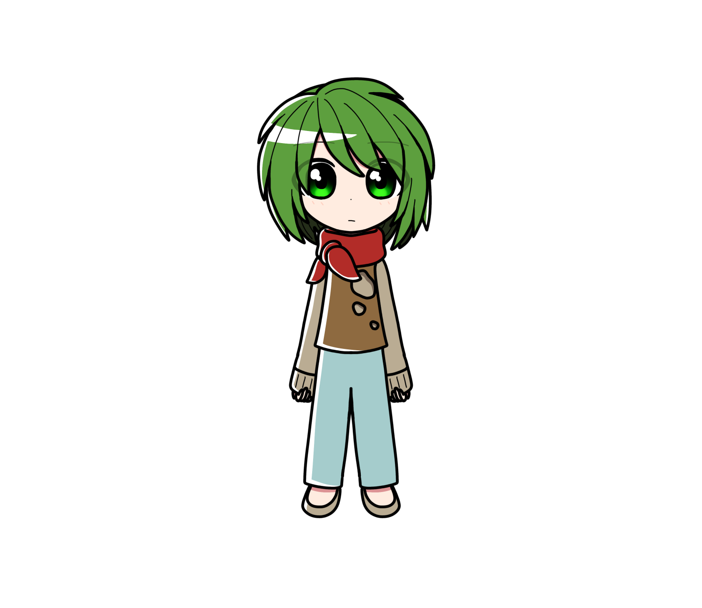

小鳥遊 たくみ
概要
メアリーの義理の弟であり、
ももかの双子の兄。
本名は「柚木たくみ」
プロフィール
| 種族 | マリオネット |
|---|---|
| 性別 | 男性 |
| 年齢 | 9歳 |
| 誕生日 | |
| 身長 | 125cm |
| 血液型 | |
| 出身 | サハアヴェン |
| イメージカラー | 緑 |
| イメージCV | 浅野まゆみ |
人物像
外見
濃い緑色のぼさぼさショートヘア。
首には赤いスカーフを巻いており、
服は破れたシャツを着ている。
性格
真面目で責任感が強い性格。
融通が利かなく頑固。知らない人には警戒心が強い。
元々の家は今以上に貧しく、
両親から冷遇され続けてきた結果、
小鳥遊家に引き取られた当初は精神が狂ってしまっていた。
生きるためなら人を傷つけ殺し食べることも厭わなくなっていたほど。
当初メアリーも毒殺しようと思っていたこともあった。
現在は本来の子供らしい性格を取り戻しつつある。
口調
一人称は「ぼく」
能力
耳がかなり良い。遠くの音も
かなり正確に聞き分けられる。